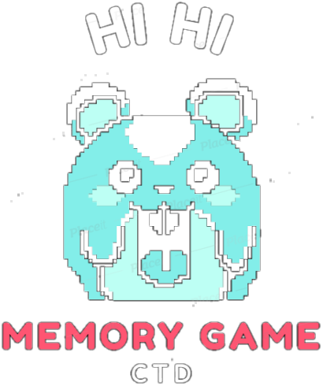

Opções de jogo

Escolha uma das opções abaixo e clique em "Ok".
Jogar com um baralho de cartas pronto
Baralho
Personagens One Piece
Personagens Marvel
Personagens aleatórios - 01
Personagens aleatórios - 02
Inglês
Criar o meu próprio baralho de cartas
Ok